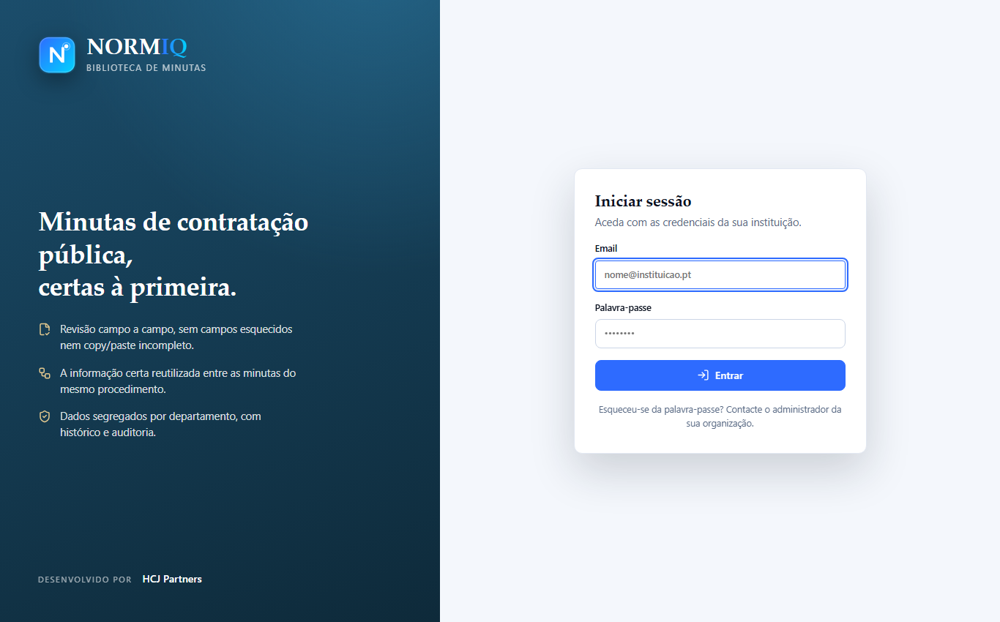
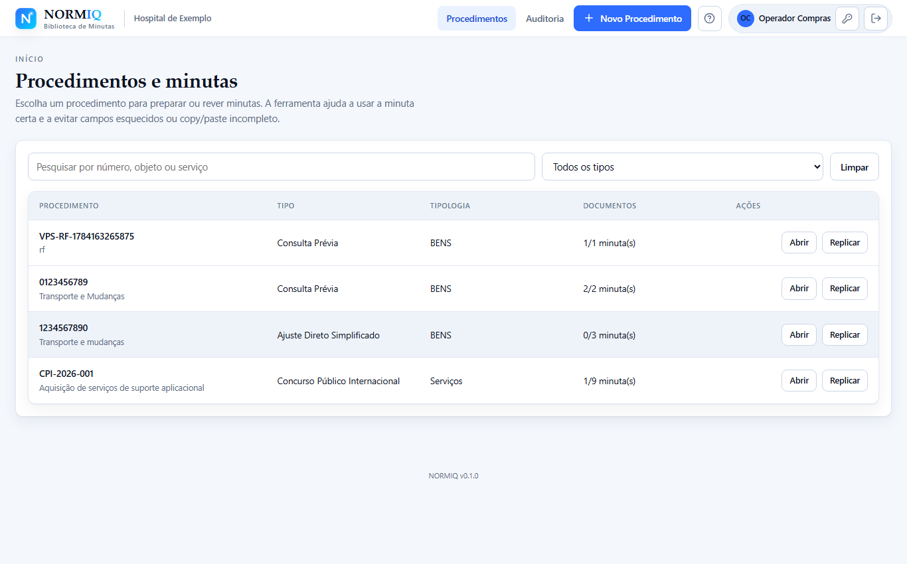
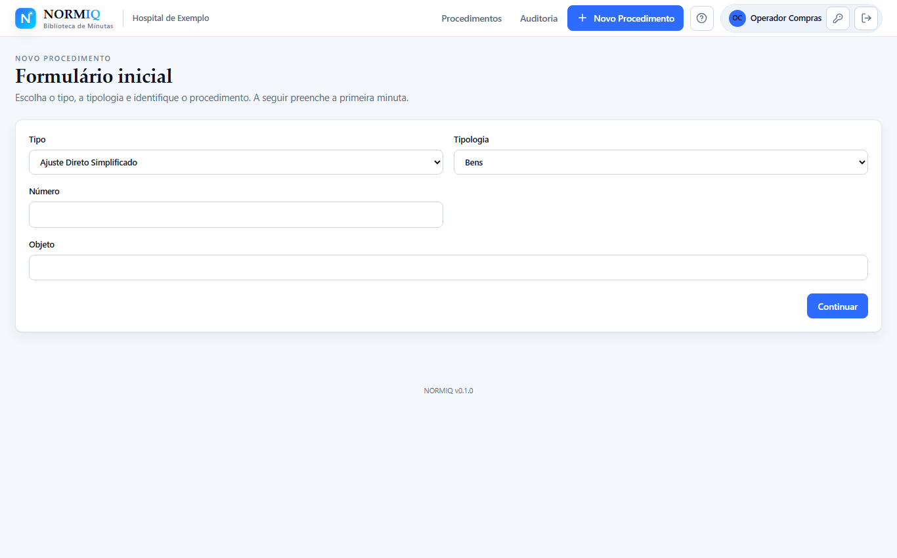
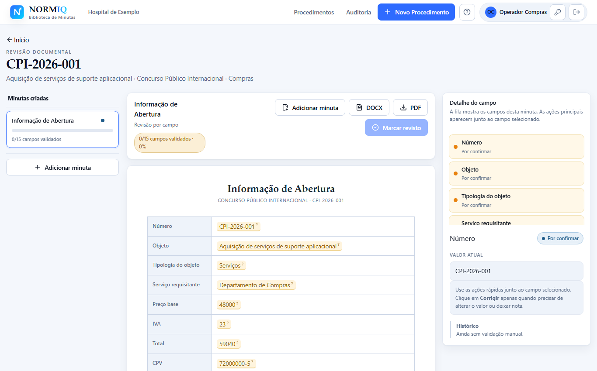
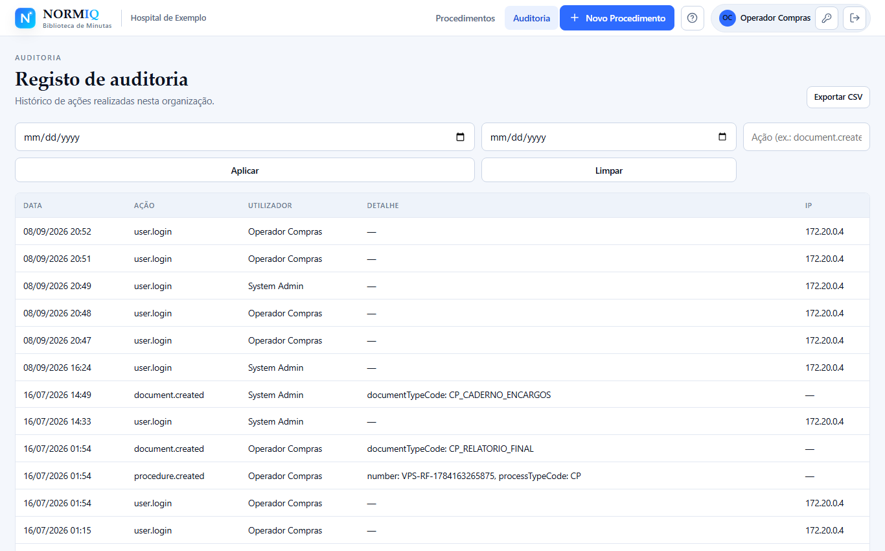
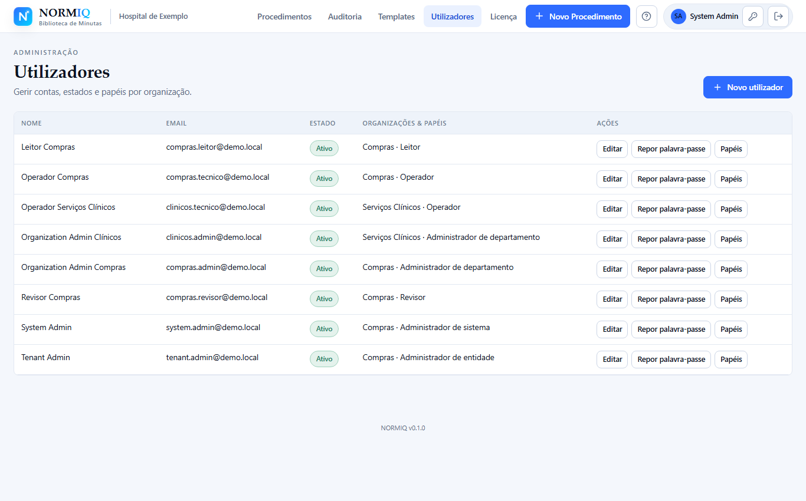

Um percurso real pelo NORMIQ, ecrã a ecrã.
Estes são screenshots reais da aplicação (dados de demonstração) — o mesmo percurso que um departamento de Compras segue todos os dias: criar o procedimento, gerar a primeira minuta, rever campo a campo e exportar o documento final.
O vídeo de demonstração (guião em marketing/video-tutorial-script.md) vai substituir
ou complementar esta página assim que estiver gravado.
Cada instituição entra com as suas credenciais
A aplicação corre dentro da entidade — os dados nunca saem para uma cloud externa.
A página de acesso identifica logo a instituição (aqui, um hospital de exemplo). Sem contas pessoais soltas: o acesso é gerido pelo administrador da organização, com papéis distintos por utilizador (leitor, operador, revisor, administrador).

/login — antes de autenticar.Todos os procedimentos, com o estado das minutas à vista
Cada procedimento agrupa as suas minutas e mostra o que já está feito.
A lista inicial mostra o tipo de procedimento, a tipologia do objeto, o departamento e quantas minutas já foram criadas em cada um. Pesquisa e filtros por tipo tornam fácil encontrar um procedimento específico quando a lista cresce.

Só se pede o que a primeira minuta precisa
Escreve o preço base e o IVA — o NORMIQ calcula o total sozinho.
O formulário inicial pede apenas os dados essenciais: tipo de procedimento, número, objeto, preço base e IVA. O total é calculado em tempo real (aqui, 125.000 € + 23% IVA = 153.750,00 €) — sem erros de conta. As restantes minutas do procedimento são adicionadas mais tarde, reaproveitando estes mesmos dados.

Revisão campo-a-campo — o momento-chave
Nada passa despercebido: confirma, corrige ou marca em falta, campo a campo.
O documento aparece ao centro com cada campo assinalado a laranja (por confirmar). O painel lateral mostra o detalhe do campo selecionado e as ações rápidas — Confirmar, Corrigir, Marcar em falta. A barra de progresso ("0/15 campos validados") acompanha o avanço da revisão até a minuta ficar pronta. É o oposto de reler um Word de trinta páginas à procura de gralhas.

CPI-2026-001 — documento + painel de campos.Um clique gera o documento final
O que revês é exatamente o que sai — em Word e em PDF, com a formatação da minuta oficial.
Os botões "DOCX" e "PDF" ficam sempre visíveis no topo do documento em revisão (ver secção anterior). A minuta seguinte reaproveita automaticamente os dados já confirmados — o preço, o objeto, o júri — para que se escreva uma vez e se use em todo o procedimento.
Tudo fica registado
Histórico de ações por utilizador, com data, IP e detalhe do que mudou.
Cada login, alteração de campo, criação de utilizador ou mudança de papel gera um evento de auditoria. Filtros por data e por tipo de ação permitem encontrar rapidamente o que aconteceu — essencial para entidades públicas com deveres de transparência e rastreabilidade.

/audit — registo de auditoria.Papéis distintos, por organização
Leitor, operador, revisor e administrador — cada um só faz o que o seu papel permite.
A gestão de utilizadores é centralizada: o administrador atribui papéis por organização (departamento), ativa ou desativa contas e repõe palavras-passe sem depender de suporte externo. Os dados de cada organização ficam segregados entre si.

/users — gestão de utilizadores.Instalação on-premise, licença clara
A aplicação instala-se na vossa infraestrutura — sem depender de terceiros para continuar a funcionar.
A página de licenciamento mostra o estado da licença (válida, em graça ou bloqueada), o cliente, o identificador e os módulos incluídos. É só de leitura: a renovação é feita substituindo o ficheiro de licença fornecido pela HCJ Partners.
/license — estado da licença, módulos incluídos e validade,
só de leitura. Mostramo-la na demonstração ao vivo.Quer ver isto a funcionar com os dados da sua instituição?
Marcamos uma demonstração de 30 minutos, sem compromisso, com um procedimento real do vosso departamento de Compras.
Pedir demonstração Voltar à página inicial